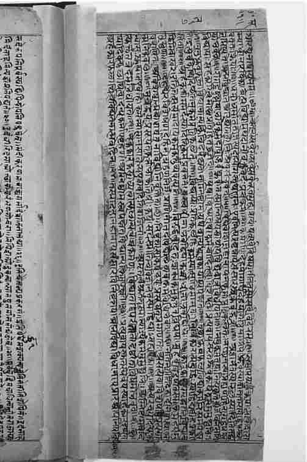

自公元前4世纪起，正统的婆罗门思想家们延续着那种对吠陀文集进行文法与释经研究的传统，这些文集的主体文献是由帕尼尼、帕坦伽利、耆米尼和跋达罗衍那等人创立的。由于印度思想流派纷呈，许多思想家力图严格维护绝对正统习俗和世界观的至高地位——无论他们首要关注的是吠陀业报部（行为的部分）的教规仪式与实在论，还是奥义书中的知识和宇宙本质，这些内容构成了《吠陀经》的尾部（吠檀多）和它的思辨部（知识的部分）。然而，直到大约公元5世纪，一种崭新而且不同的文法研究法才被提出来，再之后，弥曼差派和吠檀多诸见（dars＇anas）派的最重要分支得以建立。随着时间的流逝，后两者都在各自的理论框架下逐渐吸纳了一些变化因素，这些因素由各自传统中不同的重要思想家们提出；另外，它们还吸纳了下文将予以探讨的重要人物的思想。
公元5世纪期间，声明学家伐致呵利提出观点，认为理解古典梵语与现实之间的关系不仅是维护婆罗门教义首要原则——他指的是吠陀及其所代表的世界合法性——的一种方式，也是获得自由洞见的一种途径。他把这两类因素综合考虑，视文法和语言学习为宗教——哲学活动的最重要内容。他声称，借助吠陀梵语的发音，通过理解梵语与外在显明世界的联系方式，人们就会认知那普遍绝对（梵），从一种真正的意义上说，语言本身就是实相之声。
年代表
约公元前2000年：吠陀祭祀传统。
约公元前800—公元前500年：早期《奥义书》。
公元前500年前：婆罗门传统中崇礼派与灵智派两教派分支并存。
约公元前5世纪社会背景：在家修行者与隐修者。
约公元前485—公元前405年：佛陀在世。
约公元前2世纪——公元前4世纪：声明学派与早期释经学派。
公元前3世纪——公元前2世纪：胜论派与正理派。
公元前4世纪——公元前1世纪：佛教不同派别出现。
公元前3世纪——公元2世纪：佛教徒阿毗达摩派的发展。
公元前1世纪——公元1世纪：大乘佛教与般若波罗密经。
约公元2世纪：龙树的《中论》。
约公元4世纪：佛教的唯识学派/瑜伽行派。
公元3世纪：瑜伽经与古典瑜伽。
公元4－5世纪：自在黑辑成了经典数论派的二元本体论。
公元5世纪：声明学派的伐致呵利发展出一种与语言分析的哲学活动并行的正统诸见。他宣称，理解了语言的作用就能接近婆罗门关于解脱的知识，即宇宙的一体化本质。
公元7世纪：释吠陀经文业报部的弥曼差教义流行时期，主要支持者有鸠摩梨罗和普拉帕格拉。
公元8世纪：商羯罗教派的不二论，基于奥义书的一元释经论、“吠陀文集的末章”和思辨部部分（认知部分）。
公元11世纪：罗摩奴阇（毗湿奴派）之吠檀多，有限二元论，即一种“有限非一元论”，也是基于奥义书的注释。
（伐致呵利《字句论》1.22）
在伐致呵利进行研究的时期，声明学家们所关注的焦点问题是把句子成分的性质当作获取知识的途径。依据伐致呵利的观点，一个完整的句子才含有一套完整的意义，说出一个句子也就即时传达了单个词和片语所不能表达的有效知识：后者能传达的只是部分或不完整的知识碎片，且既易于被歪曲又容易产生误导。此外，透过对句子的理解，人们可以发现意义和词汇是结合在一起的，如果不借助于语言表达这个手段，就不会获得知识：要知晓某物就要了解其在语言中的表达。所以实相本身可以视为是可知的，而且是通过它在句子中——或者确切一点说，在一个句子中的表达实现的。伐致呵利宣称，尽管为了进行文法分析，可以把句子分解成各个单位和成分，但事实上，语言作为宇宙之声，其本身是连续而不可再分的。他在这里说出了自己所理解的一种吠陀观点的逻辑内含，这种观点认为，宇宙是通过与献祭相关的仪式之声来有效维系的。他指出，领悟这种“一元论之声”（梵音）应当是人们寻求的目标。
由于伐致呵利的教义试图理解语言对应实相的方式，因此引起了佛教逻辑学家们，尤其是陈那的极大兴趣。从对语言与实相之辩的研究来看，他们对世界的看法不尽相同：伐致呵利的见解包含了借助吠陀祭祀仪式来维系宇宙的思想，而佛教徒认为言语建构能使无明世界和轮回转世生生不息。但是这个论题本身对双方来说是同样的，并且有人认为，伐致呵利将吠陀祭祀仪式中的语音行为与《奥义书》中明显的一元论思想统一起来，这使得他成为婆罗门传统中的一个重要人物，这一传统倾向于把思想与修行分离开来。尽管弥曼差派和不二吠檀多都未全然采用他的观点，但是二者与他还是有许多共同之处；特别是稍后的弥曼差派就是深受伐致呵利所说的语言运用方式的本体论内涵的影响。
弥曼差派思想家鸠摩梨罗和普拉帕格拉是吠陀仪式经文的释经家，而不是声明学家，他们关注的要点是正确理解仪式的本质，尤其要领悟祭祀的戒律。实际上就婆罗门正统而言，这样的做法是他们的自性法（“自己的职责”）的一个主要方面，因为对《吠陀经》的研究是这个结构的一个内在部分，而此结构能确保《吠陀经》代代相传。弥曼差派把我们的世界看作是一个现实既定的多元世界，祭祀就在其中举行。他们把祭祀看成是维系这个世界的一种方式。更具体地说，也就是维护法的方式——事物本当如何：这是祭祀仪式戒律的基本原理。包含在代表着永恒真理的吠陀经文中的戒律，其本身便被视为自证自知，可谓法中内在固有的一个部分。
在尝试从哲学高度更好地理解祭祀仪式之本质的过程中，后来的弥曼差派（追随耆米尼的那些人）发现，正统声明学家们所做的工作与世界的本质有着重要的关联，而语言也是这样与世界本质联系起来的。他们认为，说出一个词就意味着该词所指之物是存在的。这有助于他们证明多元世界的实相与本质，在这个多元世界中包含有众多独立、自发的作为祭祀仪式执行者的“自我”。他们否定《奥义书》早期释经家提出的一元论主张，认为这些主张没有考虑到个人的特性与癖好、愚昧、邪恶和美德。他们宣称《奥义书》中关于理解自我的戒律其目的不是为了解脱，而是为了更好地执行吠陀祭祀仪式。同样他们也否定数论派那种无为自我在与原质相联时就会“迷失”本体的观点：相反，弥曼差派宣称，自我的本质是具有意识的中介（因此也就是积极的仪式拥护者）。正如鸠摩梨罗在其著作《颂释补》中说的那样：“人应该理解自我这一戒律的目的并不是出于解脱，此类的自我了解明显是要促进对仪式的执行。”
弥曼差派在强调世界的本质特点时曾赞同世界的多元与唯实性。他们表示赞同的方式，与第五章中已谈及的胜论派的分析分类法相类似。弥曼差派认可五种范畴：物质、属性、行为、普遍性和缺乏性。胜论派把物质分成九类（土、水、火、气、以太、空间、时间、自我和心智），在此基础上又加了两类：黑暗和声音。物质、属性和其他范畴之间的关系经常被分析，结果得出被称为“同中有异”的论点。多个范畴可共存于一体，比如红之颜色与玫瑰之形式的共存，它们的不同仅在于各自构成了一种不同的特性。它们不可能独立存在。实际上，没有任何可感知的事物是绝对相异或绝对相同的：相反，事物彼此都是独特的，或者说在分属于不同范畴上是一致的。所有的认知都牵涉到相关范畴结合在一起所呈现出来的不同方面的“同中有异”。
弥曼差认识论
对弥曼差派来说，认知代表了一种有效而可靠的获取知识的方法，这种知识包括了我们周围的世界和作为认知者的个体“自我”。认知行为“揭示”了认知者和被认知者、“超验真实”的外部存在：两者都不以任何方式依赖于认知过程的运转。相反，认知给求知对象带来了一种“正被认识”的状态，对自觉认知者的感知则给予了肯定。因此认知过程揭示了“真理”，这种情形下吠陀不朽的世界观也得到了肯定。
弥曼差派还坚持一种万物可以复归为原子微粒的理论，但是与胜论派的微小原子（不为个体感知的，只有凭借推论才被人们认识）不同，弥曼差比较看重知觉的可靠性，认为原子绝不比我们肉眼所看到的物体——譬如光中微尘更小。因此他们坚信有关实相的一种常识性观点；他们强调这一特点，是把认知本身接受为获取一种知识的可靠而有效的方式，这种知识存在于一个独立并外在于上述认知的世界中。已知的存在和认知应该被理解成行为，这些行为产生出一种在其客体中可以被认知的属性。因此，认知行为仅借助于认知发生的意义就展示出了多元世界的实相。
这种认识论所要求的并非认知需要证明——这是其他教派的方法，最明显的是佛教徒的认知理论——而是在遭遇对手的挑战时需要对手进行证伪。这样，他们就在试图加以辩护的《吠陀经》的合法性和仪式戒律方面把弥曼差派置于一个强势境地。祭祀仪式执行者的地位同样也建立起来，因为据说认知行为能揭示作为经验世界认知者永恒自我的存在。也就是说，这种执行祭祀仪式的认知不仅揭示了执行本身的独立存在性，也揭示了认知者的存在性：“我知X”这种认知是一种手段，它表明X和自我都具有自发的存在性。
这后两个相关的要点——凭借认知来确立自我和世界——对弥曼差派来说至关重要，因为他们相信《吠陀经》是体现在语言之中的永恒真理。他们坚信如下正统观念：《吠陀经》是没有创作者的。相反，它是自存的真理，认知之举不过是在揭示它的合法性，因为认知本质上是绝对可靠的。《吠陀经》是一部需要遵行的戒律，与这一性质相应，认知本身就是一项揭示性活动——凭借这些认知行为，作为认知者的自我与作为认知对象的外部世界就联系在一起。这种情形不但确立了《吠陀经》的合法性，还设法赋予《吠陀经》认知者以实相长久化之促成者的地位——这种观点对正统传统来说总是至关紧要的。
其他正统的思想家遵循跋达罗衍那的研究方法并诉诸他在《梵经》中对《奥义书》所作的概述，由此在需要获得有关宇宙的本质即梵的知识而非执行献祭仪式相关知识的语境下，理解了吠陀的戒律。有证据表明所谓的吠檀多思想家们拥有一道源远流长的谱系（《奥义书》就是吠檀多，或称《吠陀经》尾部）。但是，系统地强化了吠檀多思想并使之能与别人进行严肃辨论的，却是生活于8世纪的极具影响力的商羯罗。商羯罗最主要的作品是为跋达罗衍那的《梵经》所作的集注，该书详细阐述了作者所认为的对《奥义书》要旨的权威注解。他的主要非评注性作品是《示教千则》。商羯罗以《梵经》、《奥义书》和《薄伽梵歌》作为其创作的三个基本文本，其释经研究的目的是寻求将三者的教义融为一体——这就是所谓揭示真理的“三重根基”。
要掌握商羯罗关于吠檀多不二一元论的见解，即对主要见于奥义书中的本体论的“不二”理解，人们应该将《唱赞奥义书》的章节当成起点，其中提到：
（《唱赞奥义书》6.2.1-3）
另外还后有：
（《唱赞奥义书》6.1.4）
这些关键性的章节为商羯罗确立了两个基本点：不二一元的宇宙，其中的物质是梵；所有的变化都是表象——梵实际上不会变化。这种一元论是一种“果先存于因”（satkāryavāda）的形式，与我们在《数论》第七章中看到的不一样。此处的果不牵涉到任何物质因的实际改变，仅仅是多元性的外在表现。此种情形是“根据外在景象而定”，可称之为幻变（vivarta-vāda）。
然而，商羯罗还是不遗余力地要去确定一点，即纷纭表象确实具备世俗实相，即使它不是完全真实的。他引入了实相的两个层次：世俗实相和绝对实相——从而使自己被指责为“隐秘佛教徒”。商羯罗断然否认了这些指控，公开指责佛教教义的虚空与非本质性，并宣称梵的基本实相，即《唱赞奥义书》所称的存在，是宇宙的质料性物质。他声称，人最终的经验目标是获得梵之存在的知识，而不（仅仅）是由经验王国的认知所构建的非实体性知识。
商羯罗的不二论
商羯罗不二一元论的“不二”（advaita）给《奥义书》作出了不二或一元的本体论说明。万物皆梵，从而人之自我，即真我也就是梵，于是有一个著名的表达：梵我同一。对商羯罗来说，梵是不变的绝对本质，纷纭万象皆是外在的，并不真实。但是，这并不意味着，宣称经验世界的纷纭万象绝对不真实或不存在的观点就是正确的。确切地说，它仅是“世俗”的实相。商羯罗最常用的类比是，我们视之为蛇的东西，可能只是一条盘绕的绳子。这种情形发生时，虚假的景象对我们来说就是“真实的”，并且有“真实的”效果作用于我们。但是盘绕的绳子依旧未变，当经过错误的知觉审视时，这便被感知为“更真实”了。另一个相关类比更明确地把自我视为不变的梵的一部分：
（《示教千则》5.2—3）
商羯罗也强烈批评了数论派二元论思想的谬误，指出正理派和弥曼差派的多元实在论错将世俗多元论当成了绝对多元论，而且，所有这些错误的观点都与《奥义书》真实的（即商羯罗的）诠释相冲突。无论人们可能提出什么论点——合乎逻辑或是不合乎逻辑的——来证明自己的立场，在面对奥义书的诠释时这些论点全都错了。
支持商羯罗的不二论
（《唱赞奥义书》7.25.2）
（《蒙查羯奥义书》2.2.11）
（《梵经注》2.1.11）
对商羯罗来说，世俗实相的体验源于对绝对实相本质的无明。它不是不变的梵，而是无明，无明又是经验世界的起源和肇因。因此战胜无明、获得关于基本自我（真我）和宇宙本质（梵）的知识，就能从由于无明所导致的重生轮回中解脱出来。对于“万物皆梵，无明从何而来”这个问题，商羯罗回答道：从知识立场来看，如果“取消”了基于无明所作的思考，那么对知识之源的追问就不证自明了；从无明的立场来看，此问题无从回答，因为无明的起始这一概念只有从无明本身内部回答才有意义。
世俗世界对商羯罗至关紧要，这有两个关键的原因。其一，在此层面，吠陀才能揭示永恒真理。其二，在此层面，众生才能求得解脱的洞见。在与商羯罗的绳与蛇和岸与河的喻证（见120页的方框）极为相似而实际上更具说明性的思路中，现代不二一元论者是这样解释的：你梦到正被一只食人虎追赶，感到十分害怕，以逃跑来求生。除经历非常真实的恐惧之外，你的身体也会经受各种各样的生理变化，包括心跳加速、汗流不止。后来在你的梦中，一个没有被追赶的同伴向虎射击并将其杀死。梦中的枪声可能会使你惊醒，此刻你意识到梦中情境的现实性与你醒后情境的现实性是不一样的。但是你梦中被追赶与解脱出来的经历是从“较少（不太）真实的”现实性中推导出的。
商羯罗的不二一元论也许是印度“哲学”中最知名的哲学。早在1893年芝加哥举行的世界宗教大会上，一元论哲学的实践者辩喜首先将它作为“印度教”输入到西方，由此在西方被提出；随后这种哲学又在西方许多国家的各种研究中心，比如罗摩克里希那传道会被确立。因为它在全世界范围都受到广泛关注，不仅使得外部人士不知道它仅是印度众多思想流派之一而已，而且即使在印度次大陆的内部也不时有人将之提升为“印度正统宗教——哲学传统”。
事实上，在众多“印度教”的日常信仰中，最具代表性的信条当属公元11世纪一元论者罗摩奴阇的教义思想。罗摩奴阇是虔诚教派毗湿奴派的一个狂热成员，该派虔诚信仰的目标是人身佛，这在圣典《薄伽梵往世书》的教派经文中有所描述。但是罗摩奴阇还想确立其教派的正统地位，使其宗派具有高于其他派别的优势地位，并使他自己的教派信仰与行动“具有可信性”。他想通过商羯罗用过的正统文本的“三位根基”（跋达罗衍那的《梵经》、《奥义书》和《薄伽梵歌》）所提供的本体论与哲学教义，来确证《薄伽梵往世书》的神学从而做到这一点。

图7摘自公元1636年商羯罗的《示教千则》
摩耶—“幻觉”—与商羯罗的“实相两层次”
“摩耶”（māyā）这个词有时用在不二一元论哲学语境中，意指世俗实相是“不真实的”或是“幻相的”。虽然其他的不二一元论者确实使用该词，商羯罗却不用这个词。相反，他假定实相具有两个层次，一个是绝对的，一个是世俗的。世俗实相是无明的产物，即avidya。这意味着无明在我们居住的世界这个层面上是真实的，但是当无明为知识所取代时，实相就与世俗世界不一样了。
在《奥义书》术语里——应当记住，商羯罗首先是一个释经家——世俗实相是个“具德梵”（saguna Brahman），绝对实相是个“离德梵”（nirguna Brhaman）。这种表达在《白净识者奥义书》中能够看到。依据此书，在具德梵方面，和世俗世界一样，存在着一个人身佛。我们常常忽视商羯罗是个有神一元论者。他是人身佛的皈依者，但同时也坚持认为万象最后都归于一。关于存在人身佛的假定对一元论者来说已经与关于我们周围的多元性的假定同样不再是问题了：最终它都是梵，人身佛和世人万象皆是一样。
这样罗摩奴阇就处在既是释经者又是特定宗教主张拥护者的地位上，因此他的教义需要调和其研究方法的两个方面使其一致。罗摩奴阇的系统思想被视为作为整体的吠檀诸见的分支，因为其思想认为《奥义书》具有中心地位；这种思想体系被称为毗湿奴派之限定不二一元论——该吠檀多论强调不二论点和殊胜（受限）之质。与商羯罗的绝对一元论不同，罗摩奴阇之梵的“一”存在于作为上帝的梵（一元论在毗湿奴派之限定不二一元论文学中强烈地反映为有神论）与作为皈依者的个体自我的关系中。罗摩奴阇利用先辈所使用的玫瑰与红色类比这个例子，来说明梵之本质存于此道：玫瑰对应于红色，梵对应于个体自我；玫瑰不能没有红色（或其他颜色）而存在，梵也不能无自我而独立。作为梵之本质的各个方面，它们彼此间都是内在固存的。另外，这些方面即使严格来说不是相同的，那也不是相异的：罗摩奴阇没有像胜论派和弥曼差派那样将它们分类区别开来，相反，他认为它们是内在的，永远紧密联系而不可分离，尽管它们有各自的特质。这就是毗湿奴派的真义：“受限的不二论。”
同样与商羯罗不同的是，根据罗摩奴阇的观点，梵不是不具胜质，而是具有完全胜质。此种观念的产生无疑部分是因为其宗派需要强调这些具胜之质，如同情、仁慈之类的梵的种种表现。此类胜质在《奥义书》某些部分有所提及，商羯罗最终将之融入在绝对一元论的框架下所建立的“世俗”层面的有神论中。但是罗摩奴阇将之视为构成宇宙的真实的活性材质：经验世界是梵之真实转化，它显示出在本体论上具有相同本质的胜质和万象。他猛烈地批评了商羯罗的幻变论（“外在景象”表示外显），声称梵是经验世界的物质因，这在《唱赞奥义书》章节“梵乃自思，让我为多”中被描述为转变的外在表现，即转变论。梵实际上是变幻的，活跃的，且与个体有关系。
因果论——“果先于因”
因果论（Satkāryavāda）是认为不可能无中生有的创世论——“从虚无中进行创造”是不可能的。进一步说，在物质因里总有先存的东西，物质因除先有之物外不能创造任何别的东西。这种理论可以用不同的方法来诠释，比如，数论观就宣称显在的原质先存于暗在的原质，但是众多的神我也是独立而在的。这就是与本体二元论相关的因果论。然而，对绝对一元论者商羯罗而言，除了不变的梵，别无他物。所有外显与多元性都不过是外在景象，而不是实质变化，这可被称为幻变论（vivarta-vāda）——一种以“外在景象”表示外显的理论。相较此二种理论，罗摩奴阇的因果论虽像商羯罗的理论一样也是一元的，但他宣称梵实际上将自身转变为大千世界，此之为转变论（pari·n āma-vāda）——一种以“转换”表示外显的理论。
所有吠陀释经家，无论是重点关心仪式的本质与至上性，还是关注《奥义书》中的教义，都面临着一个资料的不连贯性问题，该问题贯穿于他们用以研究的文献汇编之始终。尽管释经家们坚信这些文献是恒久真理的记录资料，但是这些仪式手册和《奥义书》丛集的编辑经历了很长一段时期，大约一千多年。因此，如果它们没有经历颇大的变动，而且即便是粗略的研究也可证明情况确实如此的话，那可真是极不寻常的。这就使得那些不同释经方法能够被包容进来，相异的诠释在不同的领域也能具有说服力。根据所有这些释经家的观点，具有认识论确定地位（借助证明）的资料之属性，足以论证一个重要的方面，即众多印度哲学思想与西方世界所称的宗教世界观是不可分隔的。来自外部的批评通常在逻辑用词中体现出来，但是这些批评常见于在某个特定思想体系内部的逻辑，该思想体系的论点直指那些最终捍卫救世神学的世界观（诸见）。尽管出于思考的兴趣和为了与西方式的逻辑进行比较的目的，不同的逻辑论辩可以作为一个整体从印度教义背景中推断出来并从中剥离，但是古典的印度教义背景却都是一个整体，因为其中不存在上述形式上的分离。
罗摩奴阇：梵具胜质
（罗摩奴阇：《梵经注》1.1.1）
（罗摩奴阇：《吠陀义纲要》，引自约翰·卡曼的《罗摩奴阇神学》，第152页）